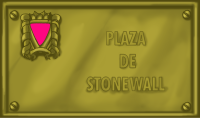

Spaces for
diversity
June 28 1969:
The revolt of Stonewall (New York)
The GLBT pride is born
A fact of capital importance took place June of 1969, 28 a fact that marks a before and a later for the collective GLBT. That day, the police, following a control tradition and harassment against transsexual, lesbians and gays -in spite of being officially forbidden the hauls- entered in the Stonewall pub, one of those frequented by GLBT public, with the pretext of a lack off of the owners to sell alcohol. In that time people had not developed a conscience of opposition and resistance to these abuses and, however, that day people rebelled. The result was several detainees that ended up in police station, while another people protested in the exterior of the local. The following day disturbances took place in the whole gay area of the city in protest for these events. During the four following days, the barricades were continuous and in successive weeks the actions continued, hindering to the police notably the control of the area. The necessity to organize and to prepare these protests took to the creation of the Gay Liberation Front (GLF). Was born this way the modern GLBT movement.
The result was several detainees that ended up in police station, while another people protested in the exterior of the local. The following day disturbances took place in the whole gay area of the city in protest for these events. During the four following days, the barricades were continuous and in successive weeks the actions continued, hindering to the police notably the control of the area. The necessity to organize and to prepare these protests took to the creation of the Gay Liberation Front (GLF). Was born this way the modern GLBT movement.
In the same way that the afroamericans was radicalizing and some sectors abandoned the peaceful fight against the discrimination, appearing more radical groups as The Black Panthers, transsexual, lesbians and gays also passed to the offensive. Suddenly, to be gay stopped to be a reason of interior shame to become an element of pride and the homosexuality began to be claimed openly. The watchword was to "leave", to be given to know openly as gay. It begins this way the period of the "gay pride" or "gay power". In fact the formula of the "black power" was copying that the black movement for the civil rights developed in that moment in the United States.
From that date -that passed to become an replevy world appointment- the GLBT movement it began to travel a new road. In the western environment, little by little, they left winning important battles to the legal, medical and social homophobia. This way, the homosexuality was not penalize gradually in all the countries, the not medicalization that began in USA starting from 1973, left imposing in the medical statement, until the World Organization of the Health it moved away the homosexuality of its catalog of mental illnesses at the beginning of the years ninety. With the new millennium, the gay couples and of lesbians they are recognized legally in most of the countries, even as marriages (Holland, Belgium, Spain...).
June 28 are a historical date that marks a landmark in the fight for the dignity of millions of lesbians, gay, bisexual and transsexual people and Stonewall is the name that goes intimately bound to that fight. They are two names for the homage, two names that we want to maintain alive in our society and that we hope to also see in their public spaces.